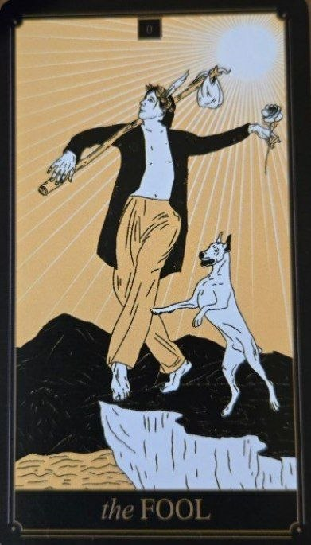

Blázon je jednou z najzaujímavejších kariet Veľkej arkány, pretože nepatrí presne nikam — a zároveň predstavuje úplný začiatok celej cesty.
Symbolizuje moment, keď človek stojí pred neznámom, ešte nemá jasný plán, ale cíti vnútorné volanie ísť ďalej. Nie je to naivita v zlom zmysle, skôr otvorenosť voči skúsenosti bez toho, aby bola všetko dopredu kontrolované.
Blázon predstavuje nový začiatok, slobodu a odvahu vykročiť mimo známeho sveta. Často sa spája s dôverou — nie slepou, ale takou, ktorá sa rodí z ochoty učiť sa za pochodu.
Táto karta nehovorí „vieš, kam ideš“, ale skôr „si pripravený ísť aj bez toho, aby si to vedel presne“.
Na karte sa zvyčajne nachádza postava mladého cestovateľa, ktorý kráča k okraju útesu alebo sa pohybuje neznámou krajinou. Často nesie malý batoh, čo symbolizuje minimálne očakávania a nezaťaženosť minulosťou.
Zviera (často pes) ho môže nasledovať alebo upozorňovať na nebezpečenstvo — ako inštinkt, ktorý zostáva prítomný aj pri odvahe.
Slnko alebo svetlo v pozadí naznačuje potenciál, ktorý ešte nebol realizovaný, ale už existuje.
Číslo 0 v tarote nie je „nič“. Skôr predstavuje bod pred začiatkom aj po konci — cyklus, ktorý sa ešte len rozbieha alebo sa práve obnovuje.
Blázon je jediná karta, ktorá môže stáť mimo poradia Veľkej arkány, čo z neho robí symbol voľnosti a nepredvídateľnosti.